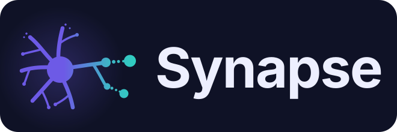
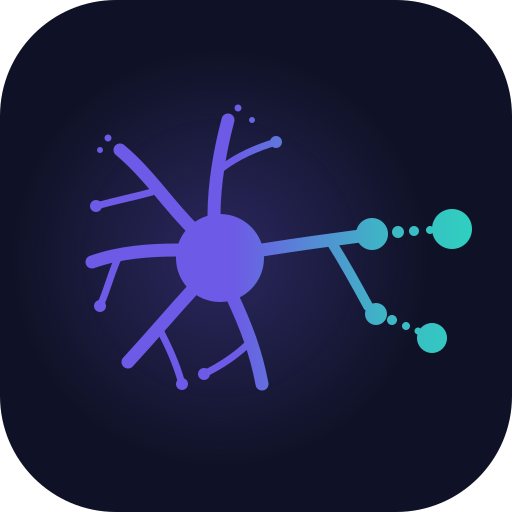
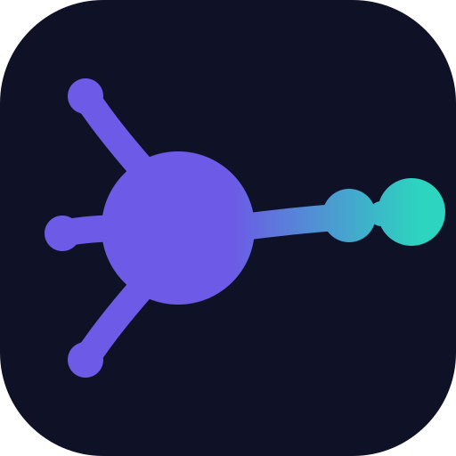

Concept: “Synaptic Gap”. Palette: violet → teal gradient. Open this file in a browser to review. Nothing has been wired into the app yet.

The wordmark ships on its own deep-indigo panel, so it looks consistent regardless of the surrounding page background (used in the About box).


The full neuron stays on the app/taskbar icon (32 px+); the simplified mark is only for the tiny favicon.
#6D5AE6 violet#A78BFA violet-lt#2DD4BF teal#14B8A6 teal-d#0F1226 groundgradient